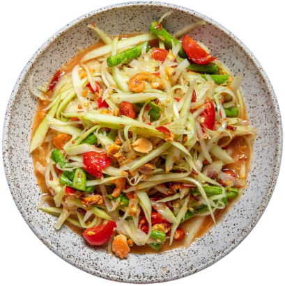
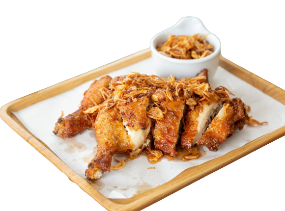

TOP PICK MENU
Somtam
ส้มตำ
Also known as Green Papaya Salad, a vibrant flavors dish and cultural significance
Pad Ka-Prao
ผัดกะเพรา
Beloved street food dish in Thailand. It's a popular choice for a quick and satisfying meal.
Pad Thai
ผัดไทย
one of Thailand's most iconic dishes, is a stir-fried noodle dish known for its unique blend of sweet, sour, and savory flavors.
Tom yum goong
ต้มยำกุ้ง
This hot and sour soup originated during the Rattanakosin Kingdom in Thailand. It's a classic Thai dish with a rich history.
Tom Kha Kai
ต้มข่าไก่
Originated in Thailand around 1890 and is considered one of the first Thai soups recorded in a Thai recipe book. It features the distinctive use of coconut milk as a key ingredient.
Kai Tod Hat Yai
ไก่ทอดหาดใหญ่
Hails from Hat Yai, a city in southern Thailand. It's a local specialty that has gained popularity both within Thailand and internationally.